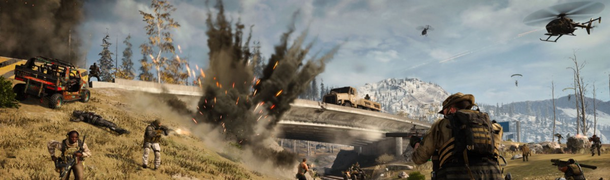

Nova temporada de Call of Duty Warzone deixa fâs
bem ansiosos com as novidades que estão
por vir.
Call Of Duty

Um evento no dia
21/04
poderá trazer o fim do mapa Verdansk, algo que é especulado pelos
jogadores
já faz
algum
tempo.
Segundo informações, os zumbis terão ligação direta com este acontecimento.
Especulasse inclusive, que uma grande explosão acontecerá durante o evento, trazendo a revelação do
novo
mapa de nome ainda desconhecido.
Mapa de Verdanxk

Abaixo
uma
demostração do mais novo game da serie callofduty.
"Black Ops
Cold War"
VEJA O VIDEO
- BLAC OPS
COLD WAR
- Campanha
Call of Duty: Black Ops Cold War se passa durante a Guerra Fria no início dos anos 80. A história é inspirada em eventos reais e a campanha passa por locais emblemáticos como Berlim Oriental, Vietnã, Turquia, e a sede da KGB soviética. Jogadores podem criar um personagem personalizado para a campanha, codinome Bell, com opções para com diferentes tons de pele, antecedentes étnicos e gêneros, assim como diferentes traços de personalidade que fornecem vantagens em jogo. A campanha também tem multiplos finais, dependendo da escolha do jogador durante a campanha.
- Multijogador
Multijogador possui novos modos e jogos e modos retornando, assim como mapas que acomodam tanto o formato tradicional 6v6, quanto o combate 12v12. O jogo também introduziu um novo modo de jogo chamado "Fireteam", o qual pode suportar até 40 jogadores. A função de Criar Uma Classe usa um sistema similar ao usado em Modern Warfare com duas grandes diferenças: melhorias de campo são implementadas como parte de cada classe, e cada classe possui uma escolha de curinga para mais acessórios primários, mais vantagens, mais equipamento de granada ou misturar e combinar qual arma/tipo de vantagem em qualquer slot. Também terá suporte a jogabilidade multiplataforma. Em adição, o sistema de progressão para o multijogador será integrado com Call of Duty: Warzone, significando que equipamentos e armas desbloqueados em Cold War poderão ser usados em Warzone e vice-versa.
- Zumbis
modo Zumbi de Black Ops Cold War possui uma nova storyline chamada de Éter Sombrio que expande a atual história do Éter, concluída em Black Ops 4, enquanto se funde à narrativa principal da campanha. Ao invés de jogar com personagens predefinidos, jogadores podem escolher Operadores do Multijogador, como parte de um equipe de resposta da CIA codinome "Requiem". Progressão e loadouts do Multijogador são compartilhados com Zumbis, e jogadores poderão qualquer arma para começar uma partida de Zumbis, junto com o Armeiro, séries de pontuação e melhorias de campo, em adição com mecânicas já conhecidas como compras da parede, a Caixa do Mistério, Soco-em-Lata e antigas Vantagens favoritas. Pela primeira vez em Zumbis, jogadores podem optar por "deixar" o mapa, o que os colocará em uma onda difícil com maior nascimento de inimigos que eles devem sobreviver antes de escapar. Um novo modo de jogo, Zombies Onslaught, foi introduzido exclusivamente para jogadores de PlayStation até 3 de novembro de 2021. Nesse modo, o qual será jogado em mapas do Multijogador, até 2 jogadores defendem áreas protegidas pela orbe do Éter Sombrio, a qual deve ser alimentada com mortes de zumbis. Mortes suficientes moverão a orbe para novas posições, forçando os jogadores a se mover ou morrer fora da zona de proteção da orbe.
O video abaixo mostra um pouco sobre o modo campanha: